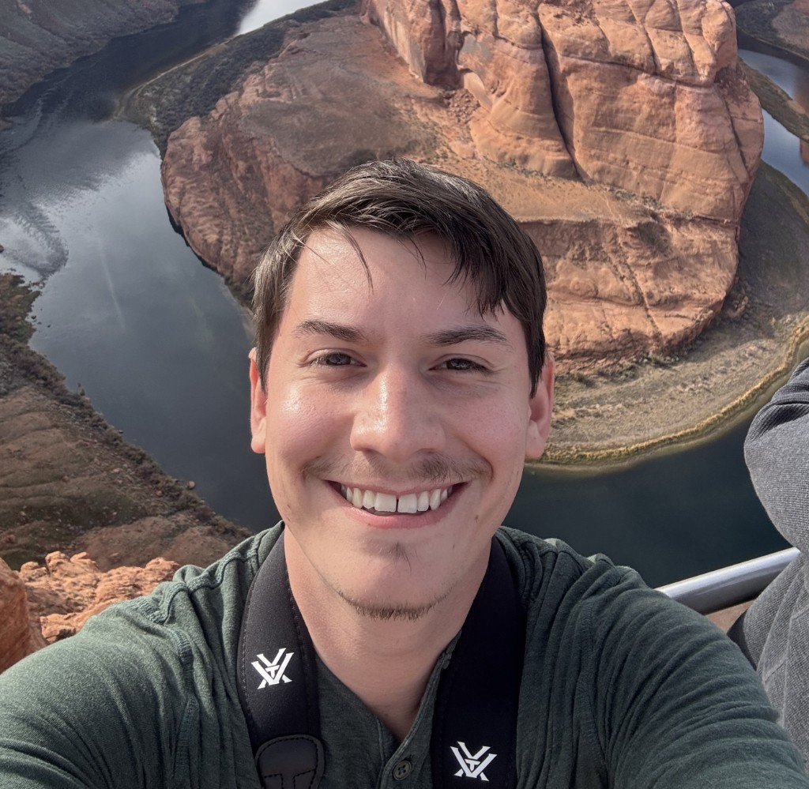

Ph.D. Candidate, Uyeda Lab @ Virginia Tech
Rapid progress on any biological problem rests on the hope that there is at least one viewpoint to each problem that makes causation relatively simple.
— Houle et al., Phenomics: The Next Challenge
I'm Caleb Charpentier, a Ph.D. Candidate in Uyeda Lab at Virginia Tech. I grew up in Louisiana, and completed my B.S. in Biology at Southeastern Louisiana University in Spring 2022.
Growing up, I was always obsessed with dinosaurs and computers. While I haven't done any work with dinosaurs, my current research incorporates ideas from Theoretical Morphology, Phylogenetic Comparative Methods, and Knowledge-Guided Machine Learning (KGML) to answer questions about macroevolutionary history. In a sense, my obsessions are still broadly what they've always been.
We live in a time with lots of hype and skepticism around AI, especially regarding its use in science. While this skepticism is often warranted, I still believe that AI tools provide powerful new ways to ask and answer questions regarding evolution. My goal is the make these tools more accessible, useful, and biologically meaningful to the research community.
In addition to my home lab, I've also worked continuously with the Imageomics Institute and the BioVision Lab at the Florida Museum.